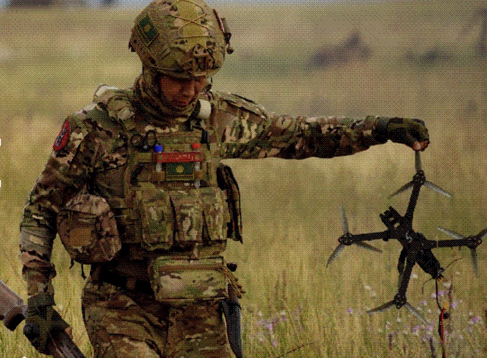
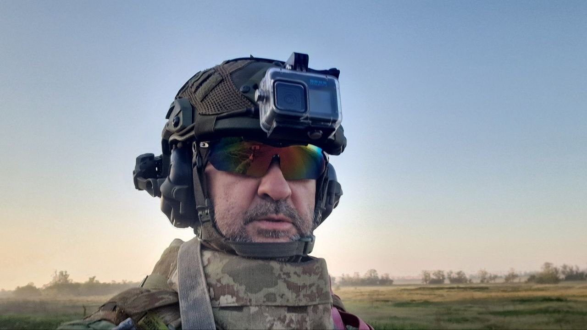
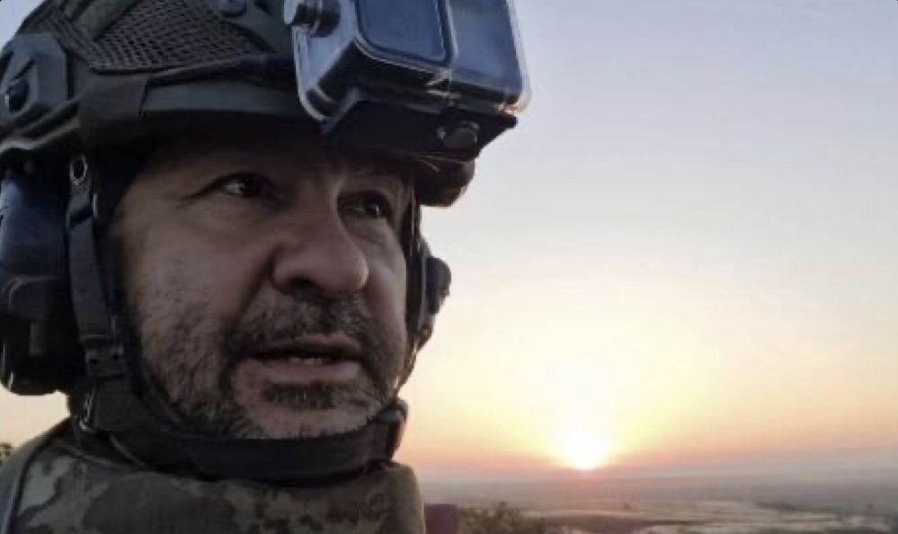
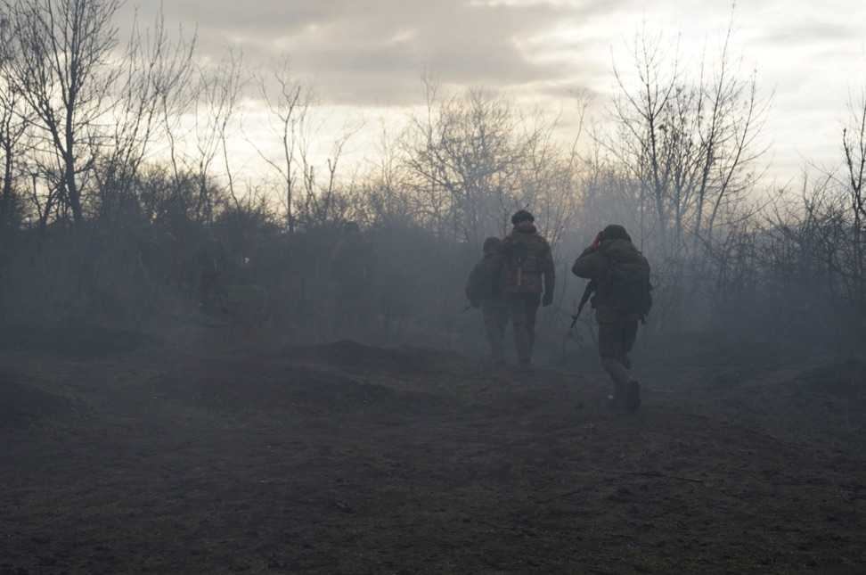
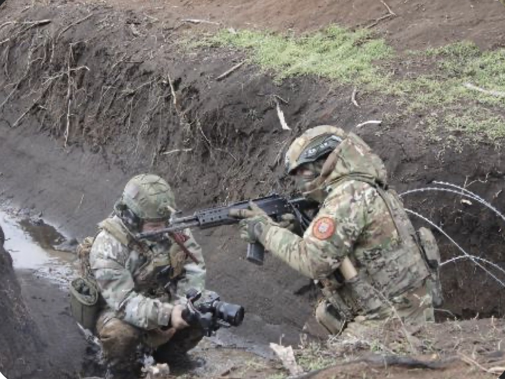
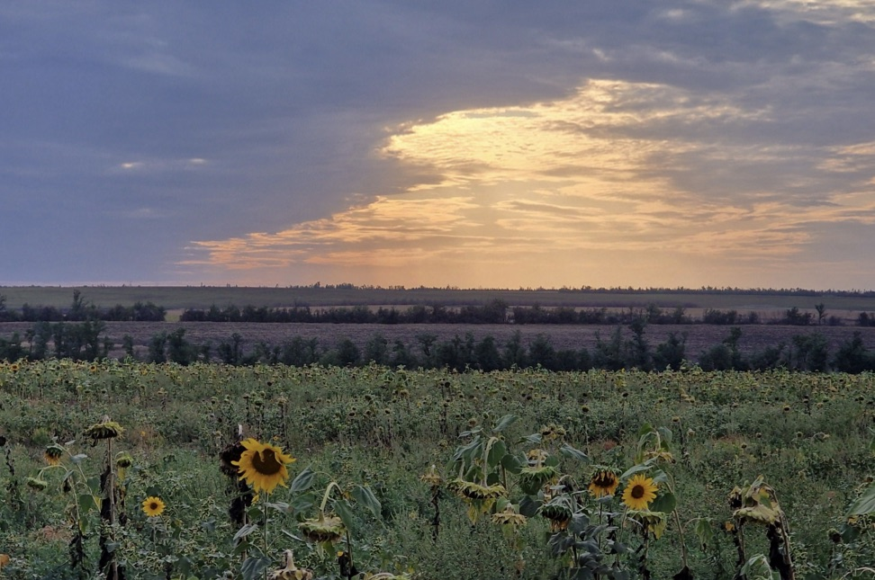
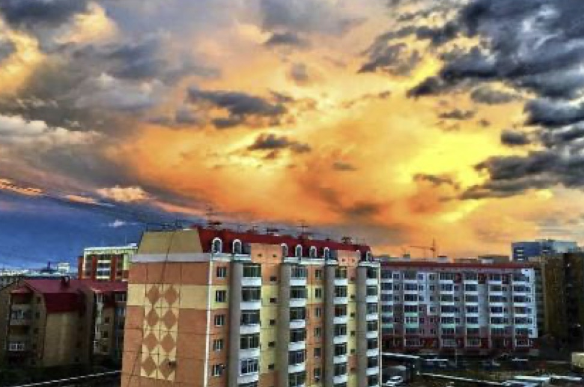
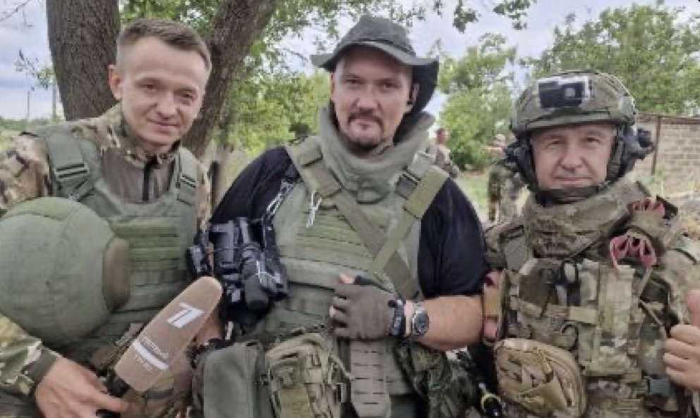

Второй шанс
Бывший заключённый стал примером для боевых товарищей. Война для него — проверка на подлинность.

01 · Аннотация
О тех, кто остался между двумя берегами неспокойной реки — долгом и домом.
О времени, которое могло принадлежать родным, но застыло на полях сражений.
02 · О фильме
Штурмовик с позывным Ханыл когда-то оступился и попал в колонию. Сегодня на него равняются бойцы. А за тысячи километров от фронта, в Якутии, его жена с тремя сыновьями ведёт свою войну — с отчаянием, страхом и несправедливостью мира.
Бывший заключённый стал примером для боевых товарищей. Война для него — проверка на подлинность.
Татьяна держит дом в далёком якутском городе. Старший, Артур, в одночасье становится опорой семьи.
Ханыл учит новобранцев сбивать вражеские дроны. Каждый выстрел и каждое решение может стоить жизни всей группе.
Средний, Влад, бросается в школьную драку, защищая имя отца. А младший, Антон, не понимает, почему «папа ушёл на войну и не приходит на утренники».
Группа спасает разведчиков, берёт ценного пленного и карты противника. И именно в этот момент над ними появляется дрон-камикадзе.
Школьный конфликт неожиданно сплачивает людей: вчерашние противники вместе собирают помощь для фронта.
Телемост между передовой и Якутией. Ханыл с товарищами благодарит родную республику, а его младший сын кружится в древнем хороводе Осуохай.
03 · Герои
Штурмовик, якут
Оступился в прошлом — и теперь каждый день доказывает, кто он на самом деле.
Замполит
Хранит письма и награды бойцов. Он дал обещание — и сдержит его любой ценой.
Жена Ханыла
Её фронт — дом, трое сыновей и ожидание, которое не заканчивается.
Слишком рано стал взрослым.
Не даст никому сказать плохо об отце.
Ждёт папу на утренник.
04 · Почему этот фильм важен
Не взгляд со стороны, а личный опыт военного корреспондента с передовой.
FPV-дроны, работа расчётов БПЛА, тактика малых групп — достоверная хроника времени, которая останется в архивах.
Ханыл — якут. Финал с Ысыахом напоминает: за каждым героем стоят его земля, род и традиции.
Фильм не прячет прошлое героя, а показывает путь искупления. Это поддержка для семей, которые столкнулись с ошибками близких.
История детей показывает: честь — это не лозунги, а ежедневные поступки. Фильм можно смотреть вместе и обсуждать в классах.
Для тех, кто не вернётся, — памятник. Для тех, кто ждёт, — опора. Наша сила не в оружии, а в том, что мы остаёмся людьми.
05 · Команда

Автор идеи · сценарист · режиссёр
Гвардии старшина, военный корреспондент 5-й гвардейской армии, редактор фронтовой газеты, выпускник киношколы TheOneFilm.
Роль
2–3 строки об опыте
Роль
2–3 строки об опыте

06 · Слово автора
«Я снимаю войну изнутри — как участник, а не как наблюдатель. За эти годы я понял: фронт держится не только на тех, кто в окопе, но и на тех, кто ждёт дома.
Ханыл — собирательный образ моих товарищей. Человек, который когда-то оступился, а на войне стал примером для других. Мне важно показать, что настоящая сила — в верности слову, семье и своему народу.»
— Эдуард Самылин
07 · Атмосфера





Локации: полигон в Ногинске или Ростове-на-Дону · Якутск · лето — осень
08 · График проекта
Кастинг, локации, форма и реквизит, сбор группы.
Полигон — сцены передовой. Якутск — сцены тыла и Ысыах.
Монтаж, цвет, звук, музыка.
Фестивали, показы в школах и кадетских классах, онлайн-платформы.
09 · Бюджет
| Съёмочная техника и свет | 000 000 ₽ |
|---|---|
| Актёры и массовка | 000 000 ₽ |
| Форма, реквизит, пиротехника | 000 000 ₽ |
| Экспедиция в Якутию | 000 000 ₽ |
| Монтаж, цвет, звук, музыка | 000 000 ₽ |
10 · Финансовая поддержка
Сценарий готов, локации выбраны. Каждый, кто поддержит съёмки, войдёт в историю фильма — буквально, в титры.
Любая сумма
Искренняя благодарность от всей съёмочной группы.
от 500 ₽
Ваше имя в титрах фильма.
от 3 000 ₽
Имя в титрах, закрытый онлайн-показ и фото со съёмочной площадки.
от 100 000 ₽
Логотип в титрах, участие в премьере, условия обсуждаются лично с автором.
11 · Как поддержать напрямую
Решите, как хотите стать частью фильма.
По номеру телефона через СБП или на карту.
Имя для титров и почту для связи.
Реквизиты для перевода
В комментарии к переводу укажите имя и фамилию для титров.
12 · Связь
Продюсерам, фондам и партнёрам пришлём сценарий и полную презентацию.
Поддержать фильм